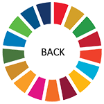
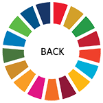

Since 2000, there has been enormous progress in achieving the target of universal primary education. The total
enrollment rate in developing regions reached 91 percent in 2015, and the worldwide number of children out of
school has dropped by almost half. There has also been a dramatic increase in literacy rates, and many more
girls are in school than ever before. These are all remarkable successes.
Progress has also been tough in some developing regions due to high levels of poverty, armed conflicts and other
emergencies. In Western Asia and North Africa, ongoing armed conflict has seen an increase in the number of
children out of school. This is a worrying trend. While Sub-Saharan Africa made the greatest progress in primary
school enrollment among all developing regions – from 52 percent in 1990, up to 78 percent in 2012 – large
disparities still remain. Children from the poorest households are up to four times more likely to be out of
school than those of the richest households. Disparities between rural and urban areas also remain high.
Achieving inclusive and quality education for all reaffirms the belief that education is one of the most
powerful and proven vehicles for sustainable development. This goal ensures that all girls and boys complete
free primary and secondary schooling by 2030. It also aims to provide equal access to affordable vocational
training, to eliminate gender and wealth disparities, and achieve universal access to a quality higher
education.
Goal Targets -
- By 2030, ensure that all girls and boys complete free, equitable and quality primary and secondary education
leading to relevant and Goal-4 effective learning outcomes
- By 2030, ensure that all girls and boys have access to quality early childhood development, care and
preprimary education so that they are ready for primary education
- By 2030, ensure equal access for all women and men to affordable and quality technical, vocational and
tertiary education, including university
- By 2030, substantially increase the number of youth and adults who have relevant skills, including technical
and vocational skills, for employment, decent jobs and entrepreneurship
- By 2030, eliminate gender disparities in education and ensure equal access to all levels of education and
vocational training for the vulnerable, including persons with disabilities, indigenous peoples and children
in vulnerable situations
- By 2030, ensure that all youth and a substantial proportion of adults, both men and women, achieve literacy
and numeracy
- By 2030, ensure that all learners acquire the knowledge and skills needed to promote sustainable
development, including, among others, through education for sustainable development and sustainable
lifestyles, human rights, gender equality, promotion of a culture of peace and non-violence, global
citizenship and appreciation of cultural diversity and of culture’s contribution to sustainable development
- Build and upgrade education facilities that are child, disability and gender sensitive and provide safe,
nonviolent, inclusive and effective learning environments for all
- By 2020, substantially expand globally the number of scholarships available to developing countries, in
particular least developed countries, small island developing States and African countries, for enrolment in
higher education, including vocational training and information and communications technology, technical,
engineering and scientific programmes, in developed countries and other developing countries
- By 2030, substantially increase the supply of qualified teachers, including through international
cooperation for teacher training in developing countries, especially least developed countries and small
island developing states